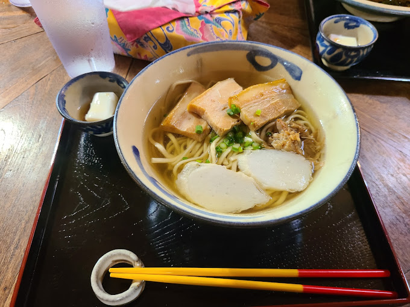
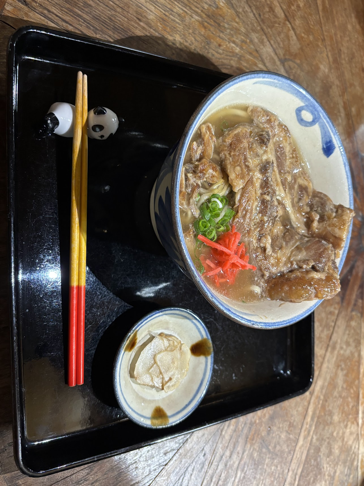

悠愉樹庵（ゆうゆじゅあん）
木々に囲まれたどこか懐かしい古民家で、
県産食材で織りなす心あたたまる沖縄そばを。


木々に囲まれたどこか懐かしい古民家で、
県産食材で織りなす心あたたまる沖縄そばを。

豚だし骨、鶏ガラ、カツオ節をベースに化学調味料を一切使わずに丁寧に心を込めて仕上げました。
三枚肉、テビチ、軟骨ソーキはいずれもスープとの相性にこだわった自家製タレでじっくり煮込んで仕上げました。
新鮮な県産食材を厳選し、食の安全に徹底してこだわった調理法から生まれる自然であっさりとした独特の風味をお届けします。
木々に囲まれた古民家にて心ほどける沖縄郷土料理をご用意して皆さまのお越しを心よりお待ちしております。

住所：沖縄県中城村屋宜824-1
営業時間：11:00〜15:00
電話番号：098-895-2280
定休日：日曜日
座席：テーブル6卓（5席）30席、座敷20席、掘りごたつ15席、カウンター4席
駐車場：あり（約15台）
『悠愉』とは、ゆったり食を愉しみ癒やされるという意を込めております。
また、『樹庵』は、木々の緑に囲われた場所を表しております。
「木々の緑に囲まれ、小鳥のさえずりが聞こえる静かな空間」で、
お客様がゆったりとくつろぎながら食し、語らうことが出来る『場』を創出し、
心も晴れやかにすることが出来れば・・・
との願いを込めて 『悠愉樹庵』 と命名いたしました。
2025年10月1日にリニューアルオープンしました。
2010年4月、〜 家族で受け継ぐ琉球の味 〜 をテーマにテレビ朝日系「人生の楽園」で紹介されました。
出典：テレビ朝日『人生の楽園』
『人生の楽園 公式HP』